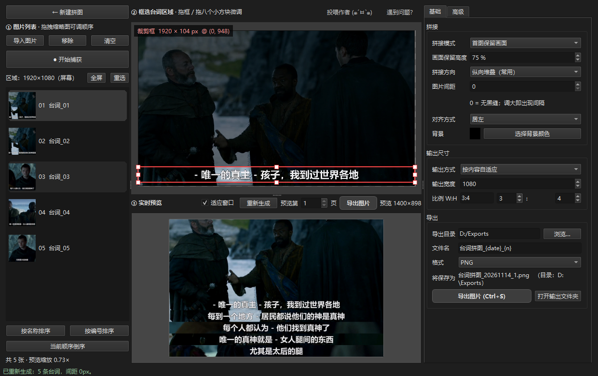
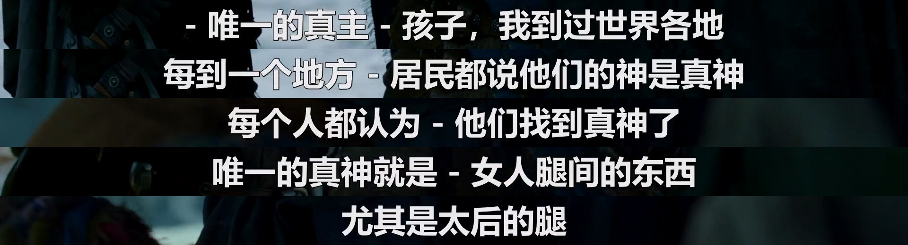
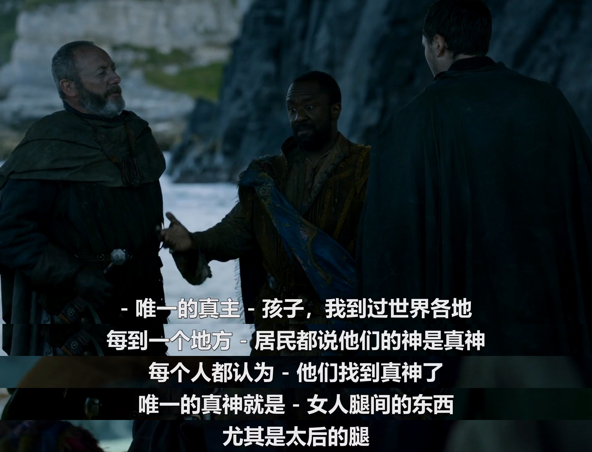
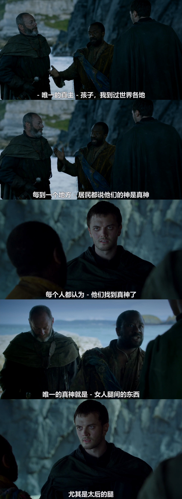

让台词慢一点，让画面停一会 —— 把视频里一句句台词，自动截下来拼成一张长图。
A Windows desktop tool that watches a video playing on screen, captures every subtitle line automatically, and stitches them into one long image. Free & open source, no OCR, no network.

F8 停止 —— 或点屏幕右上角的悬浮条，它实时显示「已截 N 张」，且不会出现在截图里。Same 5 stills, same crop box (1920×104 — full width, a bit taller than the subtitle line) — three output modes.



| 做什么 | 屏幕上播视频 → 字幕每变一句就自动截一张 → 拼成一张（或一组长图） |
|---|---|
| 怎么用 | 框选一次字幕区域 → 点「开始捕获」→ 播完按 F8 停 → 导出 |
| 适合 | 追剧台词整理、电影语录长图、双语字幕截图合集、把喜欢的台词做成可收藏的图 |
| 平台 | Windows 10 / 11（绿色单文件，双击即用；也可从源码运行） |
| 不做什么 | 不解析 SRT/ASS、不做语音识别、不做 OCR（不把字幕变成文字）、不联网 |
pip install -r requirements.txt → python run.pypython selftest.py（147 项断言）